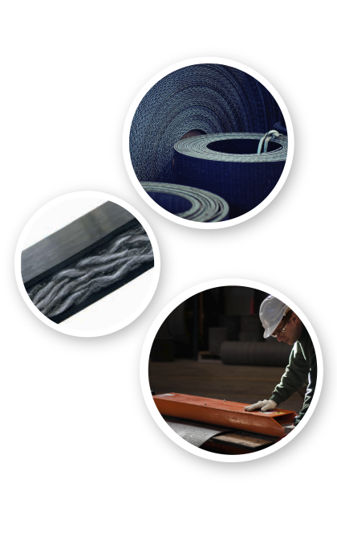

VANTAGENS
- check Alongamento mínimo.
- check Entrelaçamento único, 100% pliéster.
- check Alta resistencia a los impactos.
- check Alta resistencia a Rasgos e impactos.
- check Máxima resistencia a umidade, ácidos.
- check Alta resistencia nos desgastes laterais.
- check Anti chamas.
- check Anti estática.
- check Resistente óleos.
- check Excelentes encaixe com parafusos e unioes.
- check Máxima flexibilidade e estabilidade.
- check Baixo coeficiente de atrito.
- check Fácil de limpar.
- check não há perda de tempo nas emendas.
- check Línha sanitária e fisiologicamente inócua.